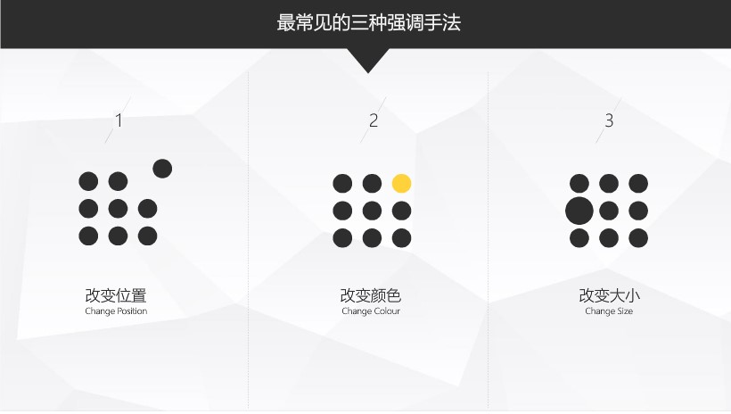
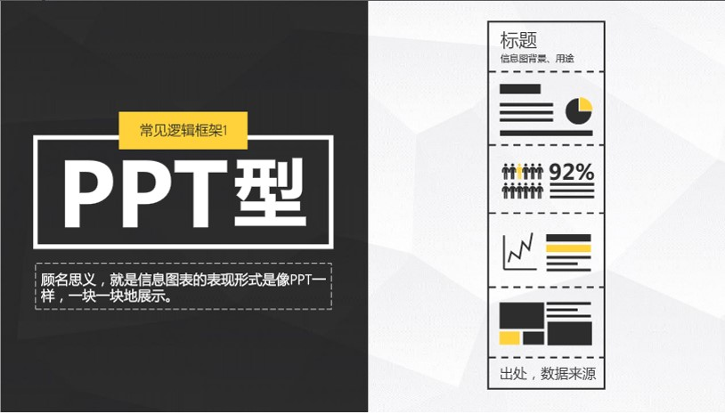
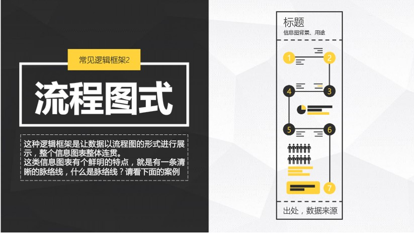
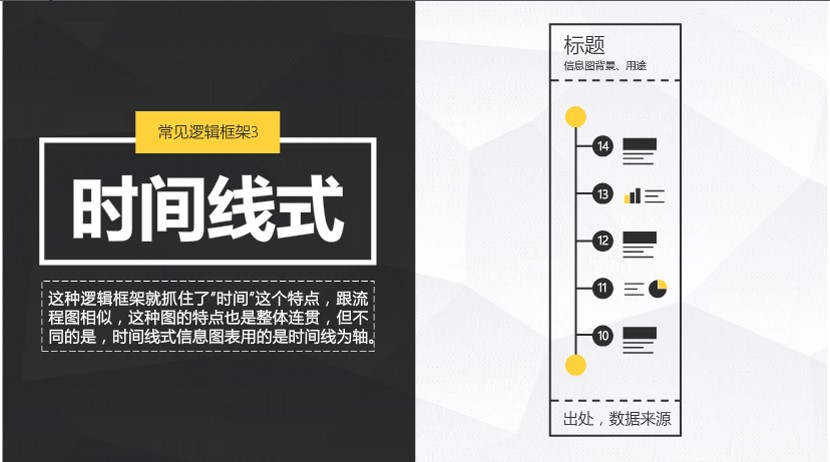
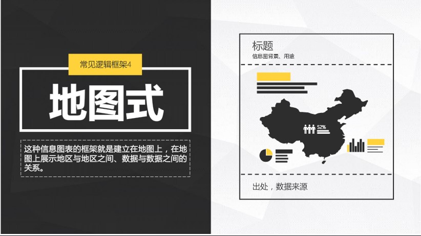
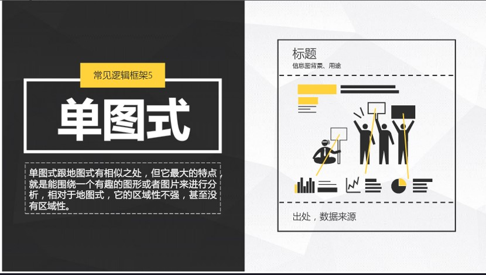
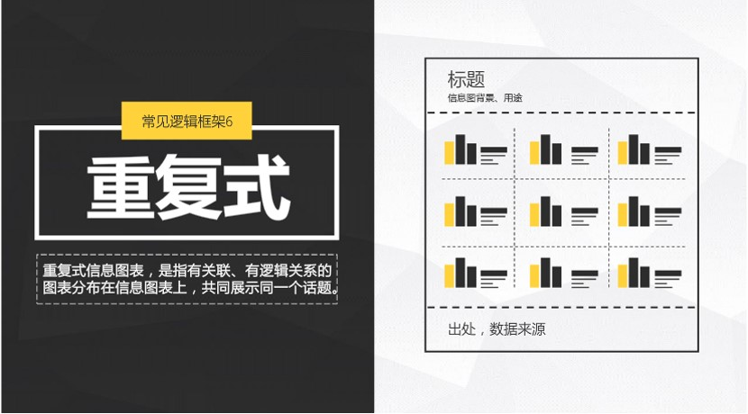
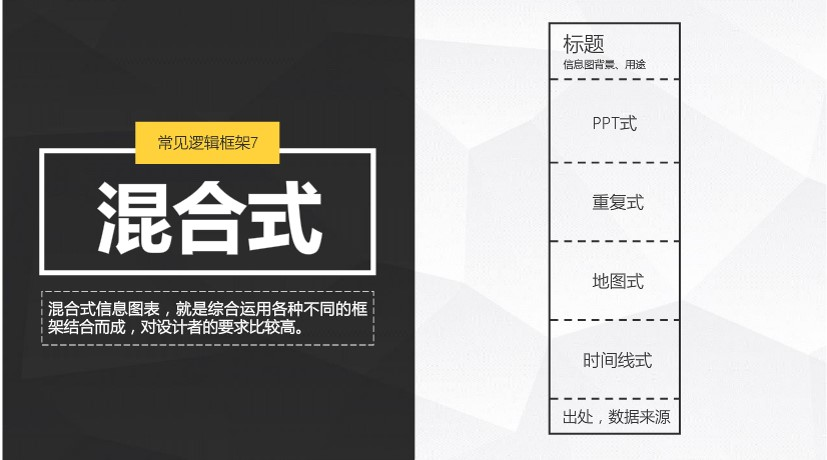

信息图表的相关知识总结。
什么是信息图表
信息、数据等的可视化表达。
为什么信息图表这么受欢迎
- 我们天生喜欢读图，信息图表有与生俱来的吸引力。
- 我们注意力有限，信息图表能提高阅读效率。
为什么你应该学信息图表
时代刚需
工作离不开信息图表。
- 竞标提案
借助信息图表，用数据说服客户。 - 产品发布
借助信息图表，形象介绍产品功能，加深用户形象。 - 业务分析
借助信息图表，迅速解读数据，协助快速决策。 - 年终总结
借助信息图表，展示业绩，规划未来。
学习需要信息图表
- 读书笔记
借助信息图表，整理内容逻辑，回顾书中精髓，温故知新。 - 时间管理
借助信息图表，把抽象的时间可视化，便于管理，提高效率。 - 毕业答辩
借助信息图表，展示研究数据，构造理论模型，为论文加分。 - 简历制作
借助信息图表，展示自我，吸引眼球。
生活处处可见信息图表
- 理财
- 备忘
- 出行
- 看新闻
求职神奇
信息图表风格简历，会让HR眼前一亮。
其实就是平常扁平化那一套：用图标，形状色块，非衬线字体。
做成长图可以在多个渠道传播。
逆袭神器
对常见信息的可视化解读，分享，得到认可，逆袭人生。
一种情怀
做表吧！
如何制作一张好表
信息图表的构成
信息图表=信息（故事内容）+图表（可视化设计）
所以好的信息图表就是好的内容和设计构成的。
内容
基础信息数据+逻辑框架
设计
图标、图表、文字描述
所以，信息图表和PPT一样，依然是结构化思考，视觉化表达。
信息图表的制作工具
PS? AI? PPT就可以啦！
一页一页做完，导出长图，不就OK啦！
信息图表的制作流程
领导决定要做-确定内容-开始收集材料-问同事拿资料-加班-改
制作信息图表的五大原则
图表合适，准确呈现
选对表别看脸，图表不是装饰。不要手绘图表，确保数据准确，符合实际。
每个图表都有自己擅长的逻辑关系：
- 饼图：比例关系
- 折线：趋势
- 柱形图：分布关系
- 散点图：相关性
- 雷达图：综合关系
设计简约，风格统一
简约至上，不要为了炫技而设计。统一风格，让整体视觉一气呵成。
使用主题配色，统一设计元素风格。
适当创新，吸引眼球
怎样让图表活起来？最常用的两种方法：
- 关联
- 关联实物加深认知：把饼图和可乐瓶盖关联起来
- 关联实物加深理解：不同品牌咖啡因含量比较用咖啡杯实物
- 关联实物营造场景：在柱状图和山峰结合，营造雪山场景
- 类比
- 实物类比形象生动：把网速与实物（飞机，火箭等）结合
- 实物类比赋予联想：用各种实物类比尺寸（罩杯等）
适当关联，注意画面美观不违和。适当类比，切勿多此一举喧宾夺主
内容精简，避免冗余
读者不关心的内容，删删删。
重点突出，结论秒懂
信息图表绝不是数据的简单罗列，你还要告诉读者这个图反映了什么问题。
把结论强调在图上，这样读者就一目了然了。
如何突出重点？
1. 强调法

2. 拆分法
如果你觉得每一个内容都是重点，都想突出，那就进行拆分，保证一个画面只讲一个内容，防止内容堆在一起互相干扰。
- 利用属性的场景进行拆分，例如马路。
- 利用熟悉的事物进行拆分，例如元素周期表
- 利用流程协助拆分
3. 粗暴法
直接告诉读者这就是重点。
- 粗暴的标出（地图位置）
- 粗暴的圈出：直接圈出重点，结论一目了然。
如何制定信息图表的内容
讲好一个故事。
- 第一步：从零开始-确定目标、提出问题
- 第二步：顺藤摸瓜-解答问题、寻找信息
- 第三步：统领全局-整理逻辑、画出框架
- 第四步：局部处理-确定数据的可视化形式
从零开始-确定目标、提出问题
做信息图表首先要确定目标，这个目标可以是一个热点、科普等。
围绕确定好的目标，提出问题，是做信息图表必不可少的一步。
提问题的原则：6W原则。数量为王，就是问题不论深浅都要提出来。
第二步：顺藤摸瓜-解答问题、寻找信息
定性问题
对于跟数据没有太大关系的问题，我们可以采用下面的方法（what why how）。
百度、谷歌、维基百科、调查问卷、采访行业专家
定量的问题
需要用数据进行说话的部分。公司给了很多数据或没数据，没数据去哪找？
首先你要确定，自己需要的数据所在的领域：微博？微信？互联网？然后就到对应的网站去收集。
- 找微博方面的数据：知微，并且有相关chrome插件。
- 微信图文数据：微信公众平台后台，如果要找别人公众号图文数据，到这新媒体排行榜
- 淘宝数据：淘宝指数
- 互联网行业数据：CNNIC与艾瑞
- 某个关键字相关数据：百度指数
找数据时可以看看同类信息图表的数据来源。
第三步：统领全局-整理逻辑、画出框架







第四步：局部处理-确定数据的可视化形式
分析：这组数据用哪个表比较合适，这段信息是否需要使用图标，这组文字是否需要进行设计。
在纸上把它们画出来，这样一个信息图表的雏形就出现了。
ICON的N中睡法
为何要用图标
信息图表里用的时候有逼格。
如何获得现成的图标
那些网站下载去，就不列举了。
如何三分钟打造一枚图标
- PPT形状编辑法
- AI素材法
- AI描摹法：也可以用vector软件
重点说一下描摹法，在AI中描摹-扩展-去白底
用软件，可以在纸上画一个图标，拍照截图，进行处理。
三招变图表大神
第一招：脱掉
脱掉背景：杂乱的背景，刺眼的背景
脱掉元素：多余的图例、坐标轴、网格线、边框线
脱掉效果：渐变、描边、阴影
脱掉字体： 难看的宋体
脱掉颜色：系统默认颜色
第二招：复制黏贴
插入图表，比如是柱形图，复制一个图标，选中柱形，黏贴就行了，如果被拉伸了，填充选择层叠就行了。
第三招：安装office2013
利用各种插件。
三招教你文字设计
信息图表文字排版术
方式一：大小搭配（包括文字粗细）
通过大小对比来突出重点是个简单却有效的方式。
方式二：颜色对比
通过颜色的对比不仅能让信息图表的重点内容突出，还能让信息图表更有设计感。
方式三：位置和旋转
根据对内容的理解，改变文本位置和适当旋转，会让排版不乏味。
文字图形化，让文字也变得秒懂
文字可以和形状进行布尔运算。
拆字，与图形组合，编辑锚点，多样化。
多思考联想标题中那个字或词可以进行设计。